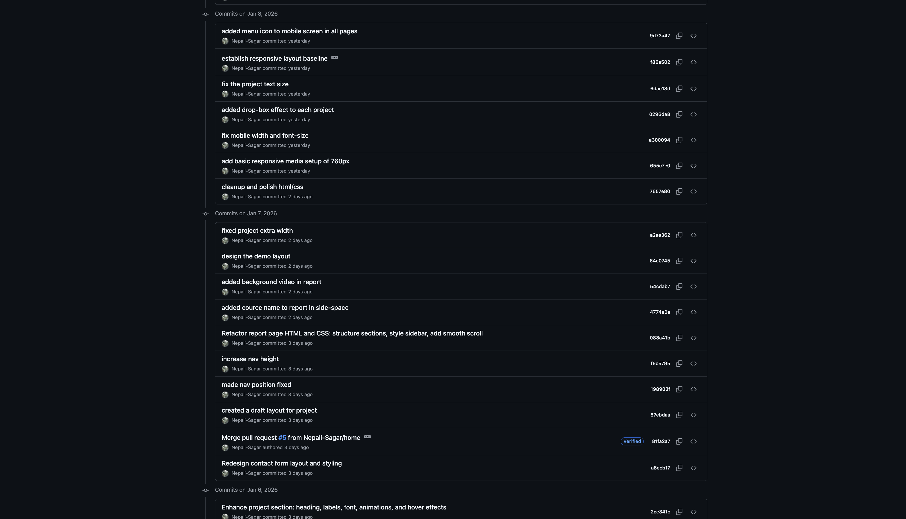

Introduction
The purpose of this website is to present a personal portfolio developed using HTML and CSS as part of the CSY1063 Web Development module. The site demonstrates core front-end skills, including page structure, layout design, responsiveness, and basic animation. This report explains the learning process, design decisions, technical implementation, challenges faced, and how version control and validation were applied during development.
Learning Experience and Development Process
During this project, I developed a stronger understanding of semantic HTML structure, CSS layout techniques, and responsive design. My CSS knowledge improved significantly, particularly in transitions, animations, and layout control using Flexbox and Grid. I also gained practical experience using Git and GitHub for version control, including committing changes regularly, resolving issues, and understanding GitHub Pages deployment. Over time, my workflow became more structured and efficient.
Design Decisions and User Interface (UI)
The site uses a dark background (#000000) with white text and a warm accent color (#f5c06b) to create strong contrast and readability. Custom fonts such as Dirtyline, Gravelo, and Roboto were selected to establish hierarchy between headings, body text, and decorative elements. Font sizes vary from small text to large hero headings to guide user attention. The layout prioritises clarity and visual focus, with hover effects used to indicate interactivity.


Home Page


Project Page


Video Demo Page


Site Report Page


Contact Page
Technical Implementation
All pages share a consistent navigation bar. Page-level layout uses CSS Grid for structure, while Flexbox is applied inside sections for alignment and spacing. Responsive behaviour is handled using media queries at 1249px and 768px. A mobile hamburger menu is implemented using adjacent sibling combinators and pseudo-classes. CSS animations such as hover scaling, opacity transitions, and keyframe-based drop-shadow effects enhance user feedback.
Debugging and Challenges
A major challenge was implementing a background video, which failed on GitHub Pages due to performance and file-size issues. This was resolved by removing the background video and replacing it with a solid background. Responsiveness was another ongoing challenge, particularly at mid-screen sizes. Git LFS was explored for video handling but later removed from the final production workflow.
Validation and Standards Compliance
HTML and CSS validation were performed using online validators. Screenshot placeholders are included in the report. Validation ensures standards compliance, improves accessibility, and reduces cross-browser issues.
GitHub Usage and Version Control
GitHub was used throughout development with frequent commits documenting incremental progress, bug fixes, and refinements. Commits span multiple dates, showing continuous development. Branching and merging were used to manage changes safely before final deployment to GitHub Pages.

Commit
Video Demonstration
A video demonstration will be uploaded to YouTube and embedded using an iframe. The video will showcase navigation, responsiveness, hover effects, and animations across the site.
Youtube LinkReflection and Future Improvements
With more time, responsiveness would be further refined and JavaScript would be added to improve interactivity, especially in the project section. Overall, the project strengthened my understanding of front-end fundamentals and practical development workflows.